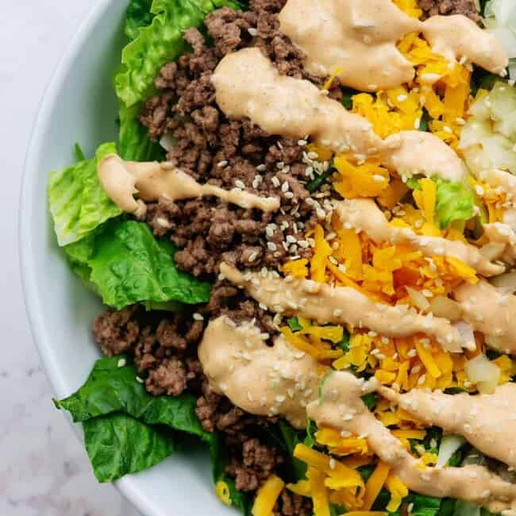

Big Mac Salad

Description
This Big Mac Salad has all of the flavors of my favorite fast food sandwich without the guilt! The big mac dressing is the perfect touch.
Ingredients
Salad
- 1 pound lean ground beef
- 1 teaspoon salt
- 1/2 teaspoon cracked pepper
- 1/2 teaspoon onion powder
- 1/2 teaspoon garlic powder
- 6 cups chopped romaine lettuce
- 1 cup shredded cheddar
- 1/2 cup sliced dill pickles
- 1/4 cup diced yellow onions
- Sesame seeds, for garnish
Big Mac Sauce
- 1/2 cup mayonnaise
- 2 tablespoons ketchup
- 2 tablespoons dill relish
- 2 teaspoons mustard
- 2 teaspons distilled white vinegar
- 1/2 teaspoon onion powder
- 1/2 teaspoon paprika
Steps
- Add the beef to a large skillet over medium heat and break the meat up as it cooks. When the beef has cooked through, drain the fat.
- Season the beef with the salt, pepper, onion powder, and garlic powder.
- Divide the lettuce evenly between 4 salad bowls, about 1 1/2 cups each.
- Top the lettuce with the the cheddar, onions, pickles, and beef.
- To make the big mac sauce, whisk together all of the ingredients until well combined.
- Drizzle about 3 tablespoons of the big mac sauce over each salad and toss well.
- Sprinkle with sesame seeds and additional pickles just before serving, if desired.